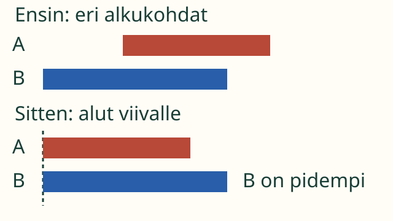
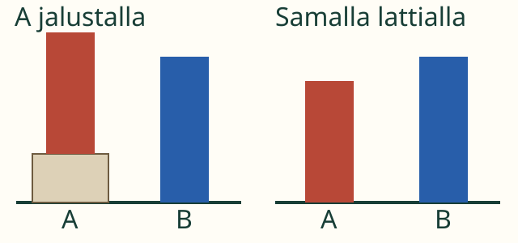
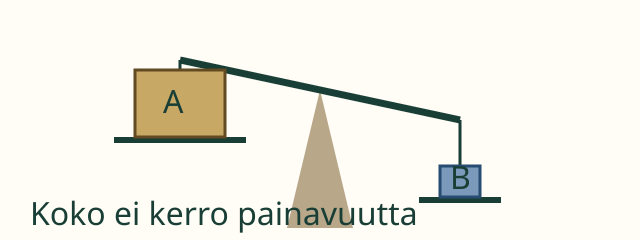

Aava tekee viiriä. Hän tarvitsee pidemmän nauhan. Kumpi se on?
Alut samaan kohtaan!
Tavoitteesi: Osaat verrata pituuksia, kun alkupäät ovat kohdakkain.
Ota kaksi paperisuikaletta, jos niitä on lähellä. Pane ne vierekkäin. Oikaise ne. Siirrä alkupäät samaan kohtaan. Katso sitten loppupäitä.
Kuvassa nauhoja esittävät värilliset palkit. A ja B auttavat erottamaan ne.
1. Loppupää voi hämätä

Siirtäminen ei venytä nauhaa. Vertaa koko pituutta, älä vain loppupään paikkaa.
A näyttää ensin pidemmältä. Se vain alkaa myöhemmin! Kun alut ovat kohdakkain, B ulottuu kauemmas. B on pidempi ja A lyhyempi.
2. Entä tornit?

Myös korkeutta verrataan yhteisestä alusta: samalta lattialta.
Jalusta nostaa A:n huippua. Jalusta ei kuulu torniin. Kun tornit ovat samalla lattialla, B on korkeampi. Palikoita ei tarvitse laskea.
Mieti hetki: Mitä jos alut JA loput osuvat samoille kohdille?
Katso ajatus
Silloin pituudet ovat samat. Eri väri ei tee nauhasta pidempää.
Kokeile itse
Siirrä nauhaa askel kerrallaan. Sen pituus pysyy samana.
Tarvitsen apua
Näytä sormella kummankin alkupää. Aseta ne samalle viivalle. Katso nyt loppupäitä. Kumpi ulottuu kauemmas?
Lisäkokeilu: painavampi?

Koko ei kerro painavuutta. Tässä vaa'assa B:n puoli on alempana: B on painavampi. Pituutta verrataan päistä, painavuutta vaa'alla.
Aikuisen kanssa: vertaa kahta turvallista esinettä tasavartisella vaa'alla. Tarkista ensin, että tyhjä vaaka on tasapainossa.
Opettajalle ja ilman ruutua
Luokat 1–2. Tavoite on mitattavan ominaisuuden suora vertaaminen ennen yksiköitä. Käytä eripituisia ja yhtä pitkiä suikaleita; vaihda värejä ja paikkoja. Vältä venyttämistä. Näytä sama vertailu pystysuunnassa. Pituus ei ole leveys eikä oikean reunan sijainti. Painavuus on lisäesimerkki eri ominaisuudesta, ei päätelmä kuvan koosta.
Lue lyhyet ohjeet tarvittaessa ääneen. Lapsi voi osoittaa, siirtää tai kertoa ilman puheen vahvistuspainiketta. M-TH-01 tukee vertailua; lukumäärää, muotojen nimiä tai yksiköitä ei oleteta. Ruutuvalinta harjoittaa kuvatun pituuden vertailua. Se ei todenna esineiden fyysistä kohdistamista eikä painavuuden tutkimista. Vastauksia ei tallenneta.
Lähtökysymys: Aava siirtää nauhaa oikealle. Muuttuuko sen pituus? Miten tarkistaisit?
Lähtökysymyksen ajatus
Pituus ei muutu, kun nauhaa vain siirretään. Oikaise nauhat, kohdista alkupäät ja vertaa loppupäitä.
 Aava tekee viiriä. Hän tarvitsee pidemmän nauhan. Kumpi se on?
Aava tekee viiriä. Hän tarvitsee pidemmän nauhan. Kumpi se on?